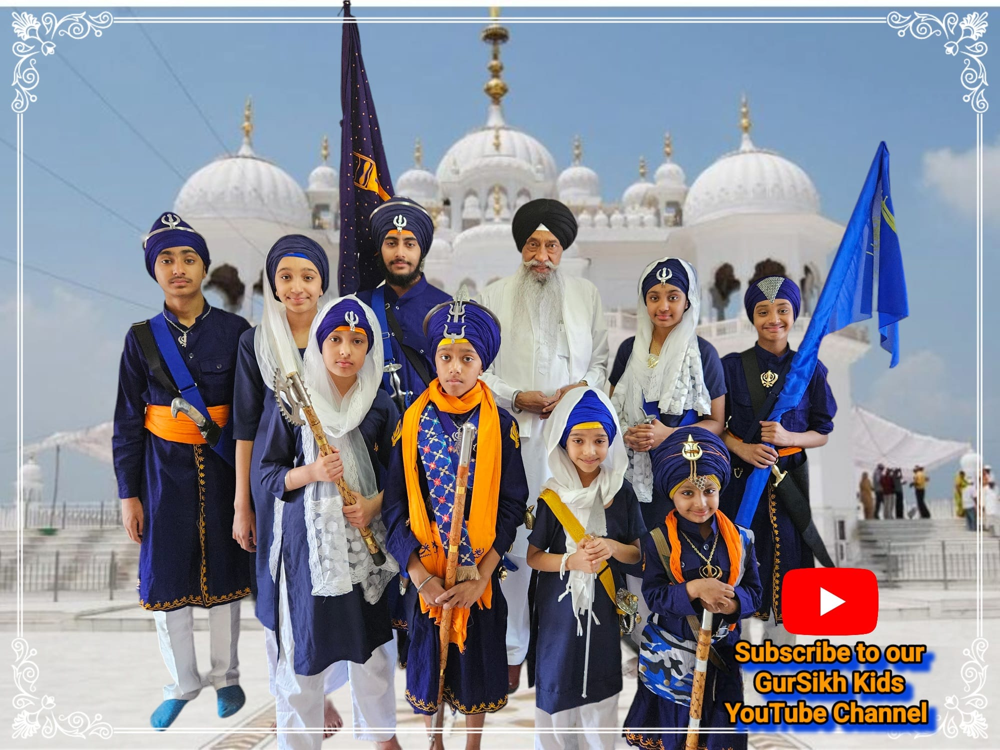

This is where you can check out the latest content
from the Gursikh Kids channel from youtube.
Japraj Jit Singh Khalsa began his YouTube journey at the age of 3. He asked his father to record and share his videos with the world. Japraj enjoyed performing Gatka and would often request his dad to film him. Alongside his brother, Yuvrajveer Singh Khalsa, he created many videos showcasing Gatka, dastaar tying, and various songs. At just 8 years old, he recorded two songs: "Bajan Wala Holla Khalsa De Naal Khedda" and "Dadhi Fikir Kari Naa Tu Terre Lalaa Shaheedi Pauni," which he created with his sister, Prabjit Kaur Khalsa. The entire family regularly participates in Kirtan sessions with their grandfather, Surjit Singh Hirapuri. The Gursikh family has been sharing their performances of Sikh Kavitaars both on stage and on YouTube.
